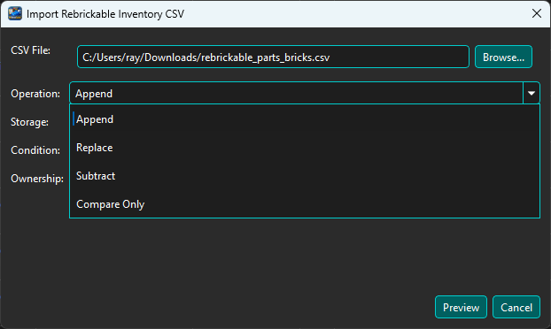
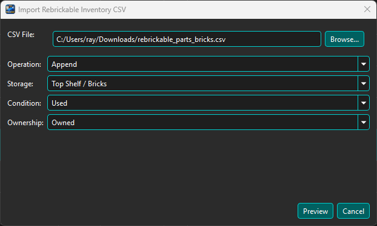
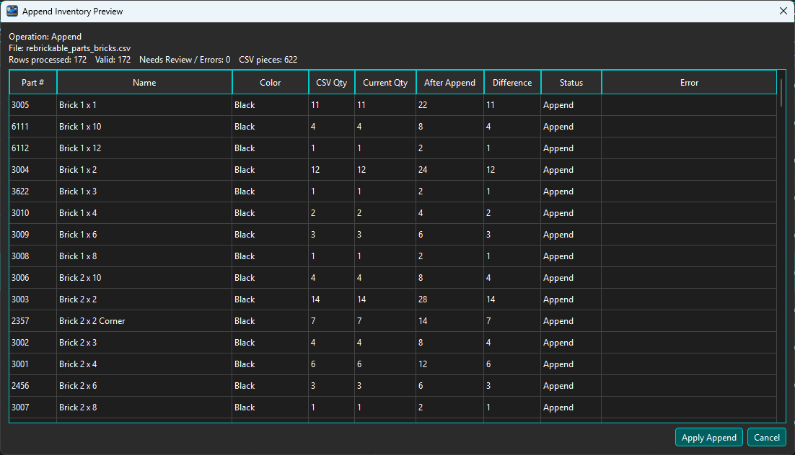
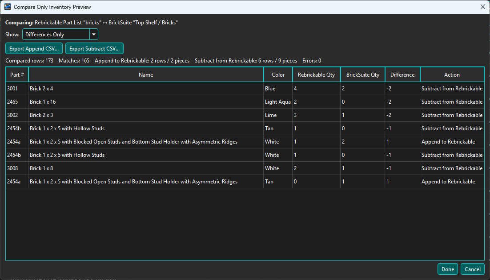
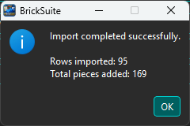
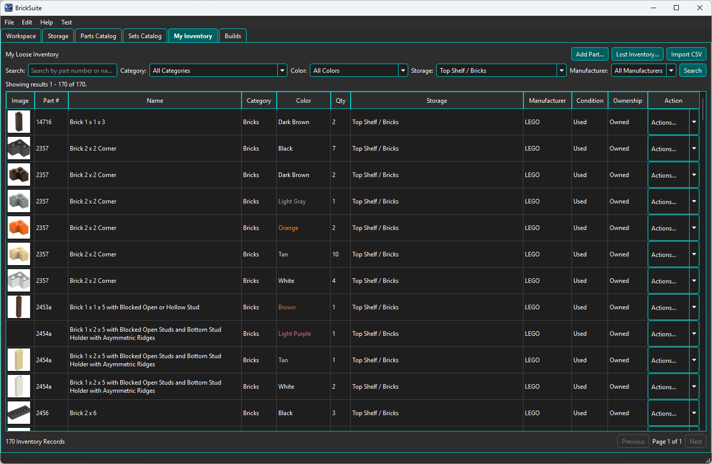

BrickSuite can use an owned-parts or parts-list CSV exported from Rebrickable to add, replace, subtract, or compare loose inventory in My Inventory. Every operation is previewed first so you can review its effect before changing BrickSuite inventory.
From My Inventory, choose the Import CSV button and browse to the Rebrickable CSV you want to use. Choose the operation before continuing.

BrickSuite provides four operations:
For inventory-changing operations, choose the destination Storage location and the Condition and Ownership values that apply to the imported parts. Then choose Preview.

When a Rebrickable parts-list filename corresponds closely to an existing Storage location, BrickSuite can use that information to help select the destination. Always verify the Storage field before continuing.
The preview shows the CSV quantity, current BrickSuite quantity, the projected result for the selected operation, the difference, status, and any validation error.

For an Append operation, After Append shows the quantity that will exist after the CSV quantity is added. The preview button changes to an operation-specific action such as Apply Append.
Compare Only is intended for reconciling a Rebrickable parts list with the corresponding BrickSuite inventory without changing BrickSuite.

The comparison identifies the Rebrickable quantity, BrickSuite quantity, Difference, and the action needed to make Rebrickable agree with BrickSuite.
The Action column can show:
The summary above the table reports compared rows, matches, the number of rows/pieces that would need to be appended to Rebrickable, the number that would need to be subtracted from Rebrickable, and any errors.
The Compare Only preview can create two reconciliation files:
These files let you make the corresponding changes on the Rebrickable side while keeping the comparison itself read-only in BrickSuite.
When an Append, Replace, or Subtract preview is correct, choose its operation-specific Apply button. BrickSuite performs the previewed changes and reports the result.

If the preview contains invalid rows or the operation encounters a genuine failure, review the reported error information rather than assuming all CSV rows were applied.
After an inventory-changing operation, return to My Inventory and filter by the applicable Storage location or search for one of the affected parts.

The resulting records appear with their part/color quantities, physical Storage location, Manufacturer, Condition, and Ownership values just like inventory entered manually.
Inventory-changing Rebrickable CSV operations are recorded in BrickSuite's inventory history. History can include the operation, quantity, Storage information, and source CSV filename. This makes it possible to trace how inventory entered or changed within the Workspace.
Choose View History from an inventory row's Actions menu to inspect those events.
parts.csv Updates Parts Catalog reference data. sets.csv Updates Sets Catalog reference data. part_relationships.csv Updates part relationship reference data. Owned-parts / parts-list CSV Adds, replaces, subtracts, or compares loose inventory. MOC CSV Supplies part requirements for a MOC Build.
The catalog CSV files maintain BrickSuite's local reference data. An owned-parts or parts-list CSV represents physical inventory or a comparison source. A MOC CSV represents Build requirements rather than loose inventory.
My Inventory | Storage | Parts Catalog | Quick Start | MOCs